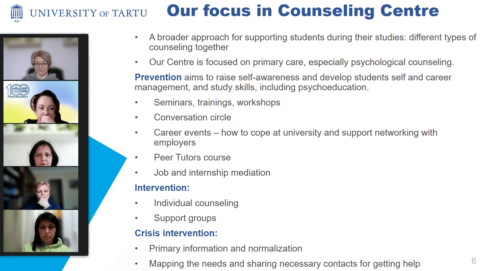

Webinar 2 "Counselling Centre" at University of Tartu (May 13, 2024)
The University of Latvia held a webinar on May 8 focusing on its Career Center. Dace Siliņa, a manager and coach at the center, highlighted its key functions. Part of the "Study Support Department," the Career Center comprises four departments: Academic Services, Admissions, Mobility, and Career Center itself. Staff like Anda Paegle, a project manager, and Līga Valinka, a professional psychologist, contribute to its diverse services.

University of Tartu Counselling Centre: What do we do and how do we work? Speaker of the webinar - Kristel Lään-Saarik
At the heart of the University of Tartu's commitment to student success is its robust counseling services, which have been integral to the university's fabric since 1998. Rooted in the recognition of students' holistic needs, the university embarked on a journey to provide comprehensive support, beginning with the introduction of psychological counseling. Over the years, the university has been at the forefront of innovation, pioneering the establishment of a dedicated Career and Psychological Counseling Service in 1999, a groundbreaking initiative among Estonian universities.
This service, designed to address not only academic challenges but also career exploration and psychological well-being, marked a significant milestone in the university's commitment to student welfare. Building upon this foundation, the university further solidified its support infrastructure with the establishment of the Counseling Centre in 2017. Housed within the Office of Academic Affairs, the Counseling Centre serves as a centralized hub for a myriad of counseling services tailored to meet the diverse needs of the university's student body.
Aligned with contemporary standards and best practices in higher education, the University of Tartu prioritizes the provision of study and career counseling, recognizing the pivotal role these services play in facilitating student success. While the availability of psychological counseling is contingent upon the university's resources, its commitment to holistic student support remains unwavering.
Led by a dedicated team comprising 16 members, the Counseling Centre offers a comprehensive suite of services, including individual counseling, support groups, and crisis intervention. These services are complemented by a range of outreach efforts aimed at informing and engaging students and university staff. Through various channels such as the university website, student newsletters, and social media platforms, the Counseling Centre ensures that its services are accessible and widely known throughout the university community.
A tour around the University of Tartu fostered camaraderie, setting the stage for crucial discussions on partnership agreements, administrative procedures, financial considerations, and project planning. The kick-off meeting concluded with the distribution of project certificates, symbolizing a positive start to the transformative journey of the "BURN" project in Crisis Psychology and Psychological Services across European universities.
In essence, the Counseling Centre at the University of Tartu embodies a steadfast commitment to student well-being and success. By providing a supportive environment and comprehensive services, the university empowers students to thrive academically, personally, and professionally, ensuring that they are equipped to meet the challenges of today's dynamic world.